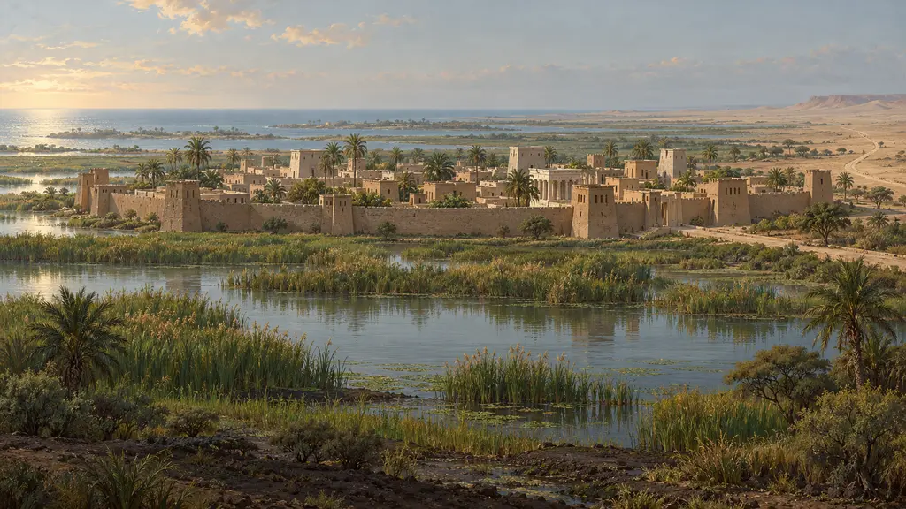
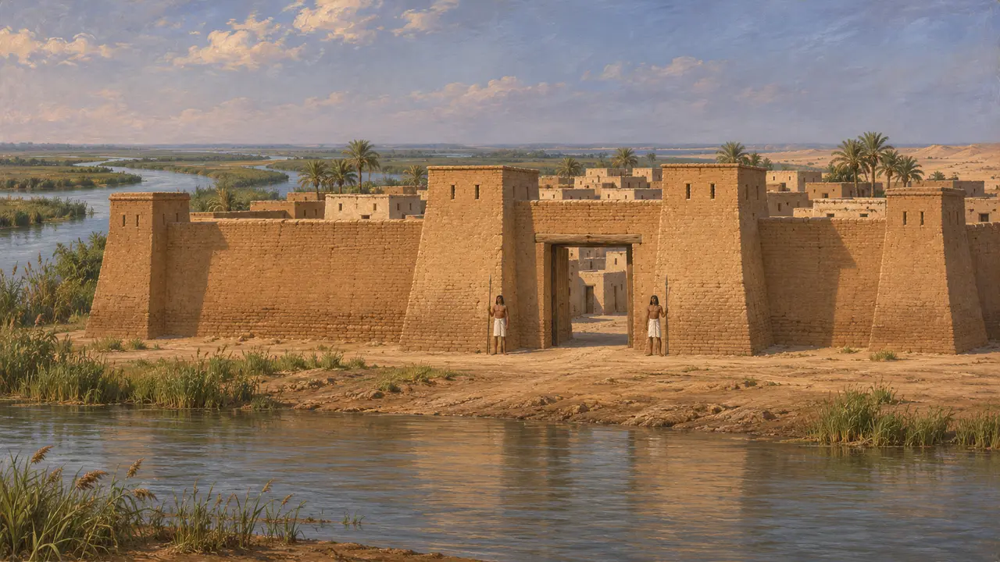
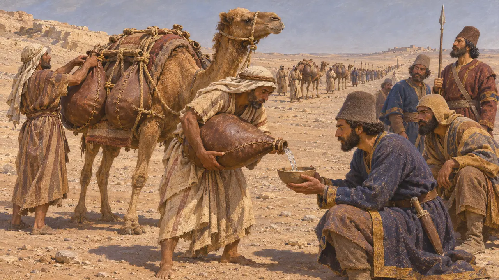
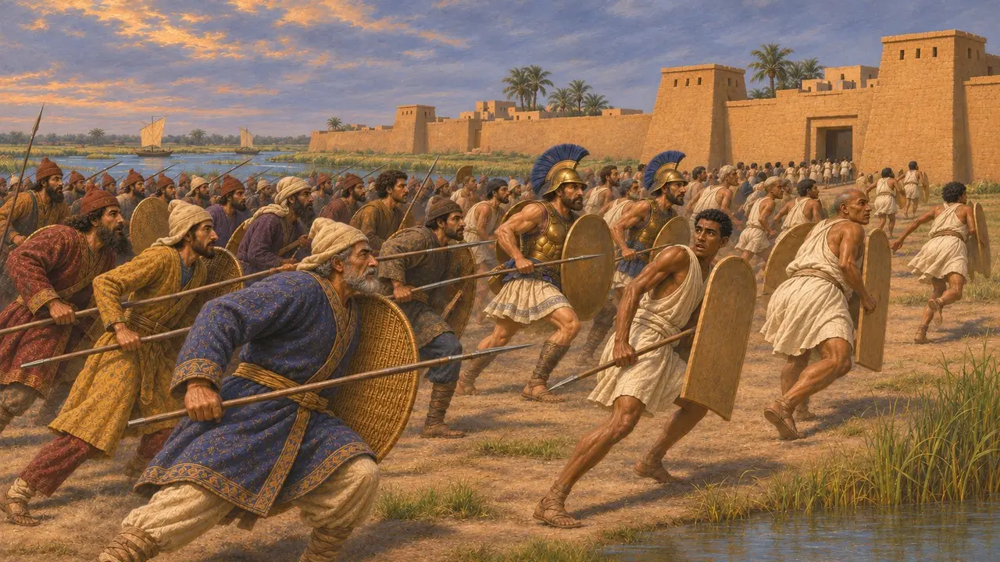
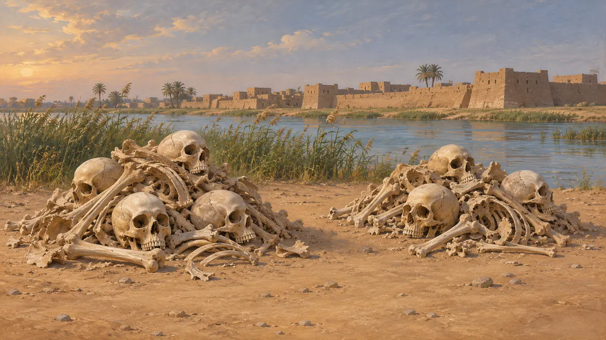
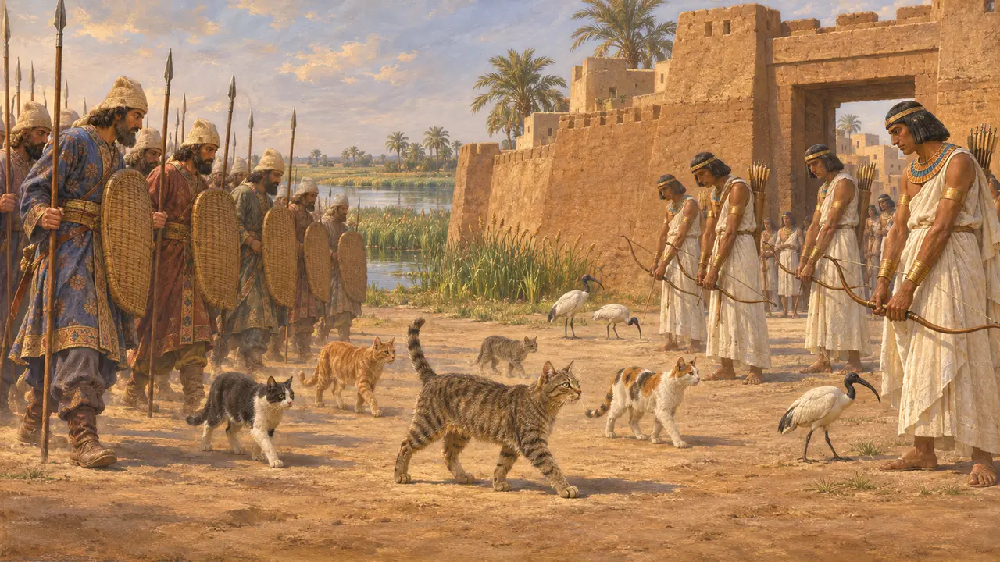

Пелусий
Город-крепость на самом восточном рукаве Нила, где Камбис в 525 г. до н. э. завоевал Египет
В игре: Уровень 2: Копьеносец
Пелусий стоял в устье самого восточного, Пелусийского, рукава Нила, там, где дорога из Газы и Синая выходила к Дельте. Любое войско, шедшее из Азии, должно было миновать его. В 525 году до н. э. неподалёку Камбис разбил войско Псамтика III, и одна эта битва открыла Египет для персидского владычества, первый период которого продлился примерно до 404 года до н. э.
В игре: Пелусий не входит в число уровней игры. Летопись называет его воротами Египта, где в 525 году до н. э. Камбис разгромил войско Псамтика III, и напоминает рассказ Геродота о черепах на поле битвы.

ворота Египта на краю Дельты
Свидетельства эпохиГородище находится в Телль-эль-Фараме на северо-западе Синая; ныне оно лежит в некотором отдалении от моря, поскольку берег и рукав реки сместились. Видимые сегодня руины в основном относятся к эллинистической, римской и более поздним эпохам, так что от города 525 г. до н. э. сохранилось немногое. Раскопанные крепости в других местах на восточной окраине Дельты, например в Телль-Дефенне, показывают, что саисские цари тщательно охраняли эту границу.
Excavation reports, Tell el-Farama and Tell Defenneh

Путь через пустыню
Античное свидетельствоГеродот пишет, что Фанет Галикарнасский, один из греческих наёмников Амасиса, перебежал к Камбису. Фанет посоветовал ему просить у арабского царя безопасного прохода через безводную пустыню. По словам Геродота, арабы доставляли войску воду в верблюжьих бурдюках. Он также приводит менее правдоподобный рассказ о кожаном водоводе от далёкой реки.
Herodotus 3.4-9

Битва 525 года до н. э.
Античное свидетельствоГеродот пишет, что Амасис к тому времени умер, и его сын Псамтик III ждал с войском у Пелусийского устья. Перед битвой греческие и карийские наёмники на глазах у Фанета убили его сыновей и выпили их кровь, смешанную с вином и водой. Бой был упорным, но египтяне дрогнули и бежали в Мемфис, который Камбис затем осадил и взял.
Herodotus 3.10-13

Черепа и иная версия
СпорныйГеродот пишет, что сам видел кости павших, всё ещё лежавшие двумя грудами. По его словам, черепа персов были так тонки, что их можно было пробить камешком, а египетские едва удавалось разбить камнем, потому что египтяне с детства бреют головы и держат их на солнце. Историки считают это объяснение местным преданием. Ктесий рассказывает о войне иначе: он называет египетского царя Амиртеем и приписывает победу персов измене евнуха Комбафея.
Herodotus 3.12; Ctesias, Persica (via Photius)

Кошки перед войском
Позднейшая легендаПредание, записанное более шести веков спустя, гласит, что Камбис победил при Пелусии, выставив перед своим войском кошек и других священных для египтян животных. Согласно этому рассказу, египетские воины не решались стрелять, боясь их ранить. Ни один ранний источник об этом не упоминает, и историю лучше воспринимать как назидательную притчу о египетском благочестии и персидской хитрости.
Polyaenus, Stratagems 7.9
Источники
- Herodotus 3.1-16
- Herodotus 2.30
- P. Briant, From Cyrus to Alexander, 2002
- Ctesias, Persica (via Photius)
- Polyaenus, Stratagems 7.9
- Excavation reports, Tell el-Farama